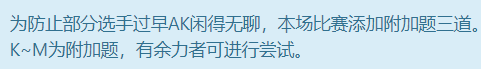

还在更新第四场，，扫尾工作这周完成的计划岌岌可危，，，尾巴扫不动啊，，

tql,,,,
A - Frog Jumping CodeForces - 1077A
题意：青蛙跳，先向右，再向左跳，给你向右跳的长度和向左跳的长度，和跳的次数，问你最后青蛙跳到了哪里；
题解：直接计算
1 2 3 4 5 6 7 8 9 10 11 12 13 14 15 16 17 18 19 20 21 22 23 24 #include <cstdio> #include <cstring> #include <iostream> #include <algorithm> #include <string> typedef long long ll;int main () ll n; scanf ("%lld" , &n); while (n--){ ll a, b, k; scanf ("%lld%lld%lld" , &a, &b, &k); ll i = k / 2 ; ll r = k - i; ll ans = r * a - b * i; printf ("%lld\n" , ans); } return 0 ; }
B - Disturbed People CodeForces - 1077B
题意：给你一个长度为n的01序列，问你最少把几个1变成0才能使任一0不被两个1包围
题解：从左边开始向右，贪心处理，从一开始处理0左边的1对后面序列无影响，而处理右边的1对后面序列无坏处，所以从左到右处理0右边的1来达成局部最优解即为全局最优解；
1 2 3 4 5 6 7 8 9 10 11 12 13 14 15 16 17 18 19 20 21 22 23 24 25 26 #include <cstdio> #include <cstring> #include <iostream> #include <algorithm> #include <string> #include <set> using namespace std ;typedef long long ll;int num[110 ];int main () int n; scanf ("%d" , &n); int ans = 0 ; for (int i = 1 ; i <= n; i++) scanf ("%d" , &num[i]); for (int i = 1 ; i <= n; i++){ if (num[i - 1 ] == 1 && num[i + 1 ] == 1 && num[i] == 0 )num[i + 1 ] = 0 , ans++; } printf ("%d\n" , ans); return 0 ; }
C - Good Array CodeForces - 1077C
题意：定义好序列为序列中最大数等于其他数字之和。 给你一个个数为n的数字序列，你能去掉一个数字让这个序列变成好序列，问你能找到多少个数字，并输出个数和各个能够去掉数字的下标；
题解：记录序列的总和，减去准备去掉的数之后如果等于当前序列最大数的两倍，那么这就是个好序列，用结构体存下初始下标，并用一数组来存答案下标
1 2 3 4 5 6 7 8 9 10 11 12 13 14 15 16 17 18 19 20 21 22 23 24 25 26 27 28 29 30 31 32 33 34 35 36 37 38 39 40 41 42 43 44 45 46 47 48 49 #include <cstdio> #include <cstring> #include <iostream> #include <algorithm> #include <string> #include <set> using namespace std ;typedef long long ll;const int N = 2e5 + 10 ;ll sum_of_xh[N]; struct nu { ll um; int xh; }num[N]; bool cmpp (nu a, nu b) return a.um < b.um; } int main () int n; scanf ("%d" , &n); ll sum = 0 ; for (int i = 0 ; i < n; i++){ scanf ("%lld" , &num[i].um); sum += num[i].um; num[i].xh = i; } sort(num, num + n, cmpp); int t = 0 ; ll tem = sum - num[n - 1 ].um; if (tem == num[n - 2 ].um * 2 )sum_of_xh[t++] = num[n - 1 ].xh + 1 ; for (int i = 0 ; i < n - 1 ; i++){ tem = sum - num[i].um; if (tem == num[n - 1 ].um * 2 )sum_of_xh[t++] = num[i].xh + 1 ; } printf ("%lld\n" , t); for (int i = 0 ; i < t; i++){ if (i != 0 )putchar (' ' ); printf ("%lld" , sum_of_xh[i]); } putchar ('\n' ); return 0 ; }
D - Cutting Out CodeForces - 1077D
题意：给你一个长为n的序列，问你能在里面找到最多相同的长度为k的子序列是哪个，输出子序列；
题解：确定最大能找到的个数为n/k，以此为右界，以1为左界（以0为下界会re，进行二分查找, 注意输出，控制输出个数；
1 2 3 4 5 6 7 8 9 10 11 12 13 14 15 16 17 18 19 20 21 22 23 24 25 26 27 28 29 30 31 32 33 34 35 36 37 38 39 40 41 42 43 44 45 46 47 48 49 50 51 52 #include <bits/stdc++.h> using namespace std ;const int Ma = 2e5 + 6 ;int ci[Ma];int n, k;bool check (int x) int sum = 0 ; for (int i = 1 ; i <= 2e5 ; i++) sum += ci[i] / x; return sum >= k; } int main () scanf ("%d%d" , &n, &k); for (int i = 0 ; i < n; i++){ int a; scanf ("%d" , &a); ci[a]++; } int l = 1 , r = n / k; if (!check(r)) while (r - l > 1 ){ int mid = (l + r) / 2 ; if (check(mid))l = mid; else r = mid; } else l = r; bool chu = true ; int sum = 0 ; for (int i = 1 ; i <= 2e5 ; i++){ int t; if (sum >= k)break ; if ((t = ci[i] / l)){ for (int j = 0 ; j < t; j++){ if (sum >= k)break ; if (chu)printf ("%d" , i), chu = false , sum++; else printf (" %d" , i), sum++; } } } putchar ('\n' ); return 0 ; }
E - Thematic Contests CodeForces - 1077E
题意：给你一个长为n个数字， 告诉你一些主题比赛的题目数，，主办方要求第一天办的主题比赛题目数，第二天必须加倍，问你最多能出的题目数；
题解：统计各个主题题目数，排序后，枚举并二分查找到底能出多少题
1 2 3 4 5 6 7 8 9 10 11 12 13 14 15 16 17 18 19 20 21 22 23 24 25 26 27 28 29 30 31 32 33 34 35 36 37 38 39 40 41 #include <bits/stdc++.h> using namespace std ;const int Ma = 2e5 + 100 ;int xian[Ma];int main () int n; while (~scanf ("%d" , &n)){ map <int , int >m; for (int i = 0 ; i < n; i++){ int t; scanf ("%d" , &t); m[t]++; } map <int , int >::iterator it = m.begin(); int tot = 0 ; for (; it != m.end(); it++) xian[tot++] = it->second; sort(xian, xian + tot); int sum = 0 ; for (int i = 0 ; i < tot; i++){ for (int j = 1 ; j <= xian[i]; j++){ int now = j; int test = j; int wh = i; while (1 ){ int t = lower_bound(xian + wh + 1 , xian + tot, now * 2 ) - xian; if (t == tot)break ; else now *= 2 , test += now; wh = t; } sum = max(test, sum); } } printf ("%d\n" , sum); } return 0 ; }
F - Almost Regular Bracket Sequence CodeForces - 1095E
题意：给你一个长度为n的括号序列，你能换其中一个括号方向，使其变成规则序列，问你能找到几个位置来变；
题解：补了一下午这道题，，，后来去看了下cf dalao们的代码，，，废了好大劲才理解明白，，，，
1 2 3 4 5 6 7 8 9 10 11 12 13 14 15 16 17 18 19 20 21 22 23 24 25 26 27 28 29 30 31 32 33 34 35 36 37 38 39 40 #include <bits/stdc++.h> using namespace std ;const int Ma = 1e6 + 100 ;int l[Ma];int main () int n; while (~scanf ("%d" , &n)){ memset (l, 0 , sizeof (l)); string s; cin >> s; int len = s.length(); int t = 0 ; for (int i = 0 ; i < len; i++){ if (s[i] == '(' )t++; else t--; l[i] = t; } for (int i = len - 2 ; i >= 0 ; i--) l[i] = min(l[i + 1 ], l[i]); int r = 0 , ans = 0 ; for (int i = 0 ; i < len; i++){ if (s[i] == '(' ){ if (l[i] >= 2 && t == 2 )++ans; r++; } else { if (l[i] >= -2 && t == -2 )++ans; r--; } if (r < 0 )break ; } cout << ans << '\n' ; } }
G - Circular Dance CodeForces - 1095D
题意：n个孩子连圈圈，每个孩子以为某些原因只能记住前两个孩子是谁，还记不住顺序，请你输出这个圈圈；
题解：记录n个孩子前两个孩子是谁，判断第一个孩子前那两个孩子的顺序，dfs搜下去
1 2 3 4 5 6 7 8 9 10 11 12 13 14 15 16 17 18 19 20 21 22 23 24 25 26 27 28 29 30 31 32 33 34 35 36 37 38 39 40 41 #include <cstdio> #include <cstring> #include <iostream> #include <algorithm> #include <string> #include <set> using namespace std ;typedef long long ll;const int N = 2e5 + 100 ;struct Kid { int nex, nexx; }kid[N]; bool visit[N];void dfs (int x) int a = kid[x].nex, b = kid[x].nexx; visit[x] = false ; printf ("%d" , x); if (visit[a] && (kid[a].nex == b || kid[a].nexx == b)) putchar (' ' ), dfs(a); else if (visit[b] && (kid[b].nex == a || kid[b].nexx == a)) putchar (' ' ), dfs(b); } int main () int n; memset (visit, 1 , sizeof (visit)); scanf ("%d" , &n); for (int i = 1 ; i <= n; i++) scanf ("%d%d" , &kid[i].nex, &kid[i].nexx); dfs(1 ); putchar ('\n' ); return 0 ; }
H - Powers Of Two CodeForces - 1095C
题意：给你一个数，问你能不能把它分为k个2的几次幂，若能，输出这些数
题解：这题与二的几次幂有很强的关联，联想到二进制后就好解决了。把n转化为二进制，看有几个1就能知道能至少要换成几个二的几次幂，而n最多能换成n个2的0次幂，所以k最大不能超过n。用一个数组来存答案，先初始化为1，用2的0次方占位，防止少计算分的个数，然后从后往前判断二的多少次幂能塞进去，最后输出答案
1 2 3 4 5 6 7 8 9 10 11 12 13 14 15 16 17 18 19 20 21 22 23 24 25 26 27 28 29 30 31 32 33 34 35 36 37 38 39 40 41 42 43 44 45 46 47 48 49 50 51 52 53 54 55 56 57 58 59 60 61 62 63 64 #include <cstdio> #include <cstring> #include <iostream> #include <algorithm> #include <string> #include <set> using namespace std ;typedef long long ll;const int N = 2e5 + 10 ;int ans[N];int two[31 ];void tw () two[0 ] = 1 ; for (int i = 1 ; i < 31 ; i++){ two[i] = 2 * two[i - 1 ]; } } int main () tw(); int n, k; scanf ("%d%d" , &n, &k); int t = n; int num = 0 ; while (t){ if (t & 1 )num++; t >>= 1 ; } if (k < num || k > n){puts ("NO" );return 0 ;} else { n -= k; int uu = 30 ; for (int i = 0 ; i < k; i++)ans[i] = 1 ; for (int i = 0 ; i < k; i++){ if (n <= 0 )break ; for (int j = uu; j >= 0 ; j--){ if (n + 1 >= two[j]){ n -= (two[j] - 1 ); ans[i] = two[j]; uu = j; break ; } } } } if (n < 0 )puts ("NO" ); else { puts ("YES" ); for (int i = k - 1 ; i >= 0 ; i--){ if (i != k - 1 )putchar (' ' ); printf ("%d" , ans[i]); } } return 0 ; }
I - Array Stabilization CodeForces - 1095B
题意：给你一个有n个数字的序列，你能从中去除一个数，问你去除数后序列中最大值和最小值的差最小为多少；
题解：去除中间的数对答案无印象，分别去除最大值和最小值，比较答案大小
1 2 3 4 5 6 7 8 9 10 11 12 13 14 15 16 17 18 19 20 21 22 23 24 25 26 27 28 29 30 31 32 33 34 35 #include <cstdio> #include <cstring> #include <iostream> #include <algorithm> #include <string> #include <set> using namespace std ;typedef long long ll;const int N = 1e5 ;int num[N];int main () int n; scanf ("%d" , &n); for (int i = 0 ; i < n; i++){ scanf ("%d" , &num[i]); } sort(num, num + n); int sum = 0 ; if (n < 3 )printf ("0" ); else { int s = num[n - 1 ] - num[0 ]; int s1 = num[n - 1 ] - num[1 ]; int s2 = num[n - 2 ] - num[0 ]; sum = min(s, s1); sum = min(sum, s2); cout << sum; } putchar ('\n' ); return 0 ; }
J - Repeating Cipher CodeForces - 1095A
题意：定义将原序列第一个字母出现一次，第二个字母出现两次，以此类推，给你一个长度为n的此序列，请你输出原序列；
题解：直接输出，每个重复字母输出一次
1 2 3 4 5 6 7 8 9 10 11 12 13 14 15 16 17 18 19 20 21 22 23 #include <cstdio> #include <cstring> #include <iostream> #include <algorithm> #include <string> #include <set> using namespace std ;typedef long long ll;int main () int n; scanf ("%d" , &n); string s; cin >> s; int sc = 0 ; for (int i = 0 ; i < n; i += sc){ cout << s[i + sc++]; } putchar ('\n' ); return 0 ; }
K, L, M 咕咕咕